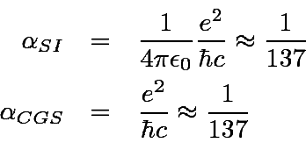

၂၀ ရာစုရဲ့ အထူးချွန်ဆုံး ရူပဗေဒ ပညာရှင်ကြီး တွေထဲက တစ်ဦးဖြစ်တဲ့ ရစ်ချတ် ဖိုင်းမန်း Richard Feynman (1918-1988) ကတော့ ဒီအချက်ကို ယုံကြည်ပါတယ်။ သူက ရူပဗေဒ ပညာရှင်တွေ အလေးထား ရမဲ့ နံပါတ် တစ်ခု ရှိတယ် လို့ ပြောခဲ့ပါတယ်။
ဒီနံပါတ်ကို သူက “ရူပဗေဒရဲ့ သောက်ကျိုးနဲ အကြီးမားဆုံး ပဟေဠိ – လူသားတွေ ဘယ်လိုမှ နားမလည်နိုင်ပဲ ကျွန််တော်တို့ ဆီကို ရောက်လာတဲ့ နံပါတ်” (“one of the greatest damn mysteries of physics: a magic number that comes to us with no understanding by man”.) ဆိုပြီး ပြောခဲ့ပါတယ်။
ဒီ မှော်နံပါတ် ကို ရူပဗေဒ မှာ အမည်သီးသန့်တောင် ပေးထားပါ သေးတယ်။ “Fine structure constant (အဏုစိတ်ဖွဲ့စည်းမှုကိန်းသေ)” လို့ အမည် ပေးထားတာပါ။ ဒီ နံပါတ်ရဲ့ တန်ဖိုးကတော့ 1/137 နီးပါး ရှိပါတယ်။ အတိအကျ ပြောရရင် 1/137.03599913 ပမာဏ ရှိပါတယ်။ ဒီကိန်းသေကို သင်္ချာ သင်္ကေတနဲ့ ဂရိ အက္ခရာ အယ်လ်ဖာ (alpha – α) လို့ သတ်မှတ် ထားပါတယ်။
ဒီ အယ်လ်ဖာ နဲ့ ပါတ်သက်လို့ ထူးခြားတဲ့ အချက်ကတော့ သူ့ကို “သန့်ရှင်းတဲ့ နံပါတ် (pure number)” တွေထဲက အကောင်းဆုံး pure number အနေနဲ့ သင်္ချာ ပညာရှင် တွေက မှတ်ယူ ထားကြတာပဲ ဖြစ်ပါတယ်။ သန့်ရှင်းတဲ့ pure number ဆိုတာက ဘာ ယူနစ် (ပေတို့၊ ဂရမ်တို့ လို ယူနစ်) မှ တပ်စရာ မလိုပဲ သူ့ နံပါတ် ချည်း သီးသန့်နဲ့တင် အဓိပ္ပါယ် ရှိနေတဲ့ တန်ဖို့းတစ်ခု ဖြစ်ပါတယ်။ တနည်း ပြောရရင် သူ့ ပင်ကိုယ် ကိုယ်နှိုက်မှာ တန်ဖိုး ရှိတဲ့ နံပါတ် တစ်ခု ဖြစ်ပါတယ်။
ဒီ alpha ဟာ တကယ်က သဘာဝ တရားရဲ့ အခြေခံ ကိန်းသေ တန်ဖိုး ၃ ခု ပေါင်းစပ်ပြီး ဖြစ်ပေါ်လာတာ ဖြစ်ပါတယ် လို့ ရူပဗေဒ ပညာရှင် ပေါလ် ဒေးဗီးစ် (Paul Davies) က ရှင်းပြပါတယ်။ အဲ့သည် ကိန်းသေ တန်ဖိုး ၃ ခုကတော့ (၁) အလင်းလျင်နှုန် (၂) အီလက်ထရွန် တစ်လုံးက သယ်ဆောင်ထားတဲ့ လျှပ်စစ်ဓါတ်အား နဲ့ (၃) ပလန့် ကိန်းသေ Planck’s constant တို့ပဲ ဖြစ်ပါတယ်။
တနည်းအားဖြင့် ရူပဗေဒ နဲ့ စကြာဝဠာ ရဲ့ အခြေခံ တွေဖြစ်တဲ့ relativity နှိုင်းရ နိယာမ၊ လျှပ်စစ်သံလိုက် စွမ်းအင် (electromagnetism) နဲ့ ကွမ်တမ် ရူပဗဒ တို့ရဲ့ ဆုံမှတ် တန်ဖိုး ဖြစ်နေပါတယ်။
နောက်ရူပဗေဒ ပညာရှင် တစ်ဦးဖြစ်တဲ့ လောရှင့်စ် အီးဗ်စ် (Laurence Eaves) ကလဲ အကယ်လို့သာ အခြား ဂြိုဟ်တွေက သက်ရှိတွေကို ဆက်သွယ်ဖို့ အတိုဆုံး သတင်းစကား ပို့မယ်ဆိုရင် ဒီနံပါတ် ၁၃၇ ကို ပို့သင့်တယ်လို့ အကြံပြုပါတယ်။
ဒီ နံပါတ် ပါဝင်တဲ့ သတင်းစကားဟာ ကမ္ဘာ ပြင်ပက အသိဉာဏ် မြင့်မားတဲ့ သက်ရှိတွေ ကို ဒို့လူသား တွေဟာ နှိုင်းရ သီအိုရီ၊ လျှပ်စစ် သံလိုက် လှိုင်းတွေ အကြောင်းနဲ့ ကွမ်တမ် သီအိုရီ တို့ကို နားလည် သဘောပေါက်တယ် ဆိုတဲ့ သတင်းကို ပေးနိုင်မှာ ဖြစ်ပါတယ်လို့ သူက ထောက်ပြပါတယ်။
တကယ် နည်းပညာ အဆင့်အတန်း တစ်ခုရောက်နေတဲ့ ဂြိုဟ်သားတွေ ဆိုရင် ဒီ ၁၃၇ ရဲ့ အရေးပါမှုကို သိမှာပေါ့လို့ သူက ယုံကြည်ပါတယ်။
ကွမ်တမ် ရူပဗေဒရဲ့ ဆရာကြီး တစ်ဆူ ဖြစ်တဲ့ နိုဘယ် ဆုရှင် ဝုဖ်ဂန် ပေါ်လီ Wolfgang Pauli (1900-1958) ဟာလဲ ဒီ နံပါတ် ၁၃၇ နဲ့ ပါတ်သက်တဲ့ လျှို့ဝှက်ချက် တွေကို သူ့ဘဝ တစ်လျှောက်လုံး အဖြေရှာဖို့ ကြိုးစား ခဲ့တယ်လို့ ဆိုပါတယ်။ (Wolfgang Pauli ဆိုတာ ကွမ်တမ် ရူပဗေဒရဲ့ အခြေခံ နိယာမ တစ်ခု ဖြစ်တဲ့ Pauli exclusion principle ကို ဖော်ထုတ်ခဲ့သူပါ။)
“ငါ သေသွားရင် ယမမင်းနဲ့ တွေ့တဲ့အခါ ပထမဆုံး မေးမယ့် မေးခွန်းက အဏုစိတ်ဖွဲ့စည်းမှုကိန်းသေရဲ့ အဓိပ္ပါယ်က ဘာလဲ ဆိုတဲ့ မေးခွန်းပဲပေါ့” လို့ သူက တစ်ခါက နောက်ပြောင်ပြီး ပြောခဲ့ ဖူးပါတယ်။
ပေါ်လီ ဟာ ၁၉၄၆ ခုနှစ်က နိုဘယ်ဆု လက်ခံယူစဉ်က ပြောကြားခဲ့တဲ့ မိန့်ခွန်းမှာလဲ ဒီနံပါတ်ကို မမေ့မလျှော့ ထည့်သွင်း ပြောကြား ခဲ့ပါတယ်။
ဒီ မိန့်ခွန်းမှာ သူက ဒီကိန်းသေရဲ့ တန်ဖိုးကို အတိအကျ သတ်မှတ်နိုင်ဖို့ သီအိုရီ တစ်ခု လိုအပ်နေတယ်၊ ဒါမှသာ အီလက်ထရွန်ရဲ့ ဖွဲ့စည်းပုံကို အသေအချာ ဆုံးဖြတ်နိုင်မှာ ဖြစ်တယ် လို့ ထည့်သွင်း ပြောကြား သွားခဲ့ပါတယ်။
ရူပဗေဒမှာ ဒီ ကိန်းသေနဲ့ ပါတ်သက်လို့ လက်ရှိ အဓိက အသုံးချနေ တာကတော့ အီလက်ထရွန်လို လျှပ်စစ်ဓါတ်ဆောင် အမှုန်တွေ လျှပ်စစ် သံလိုက်လှိုင်း စက်ကွင်းထဲ ရောက်ရှိသွားရင် ဘာဖြစ်လာ မလဲ ဆိုတာကို ဆုံးဖြတ်တဲ့ နေရာမှာ ဖြစ်ပါတယ်။
နောက်ပြီး အက်တမ် တစ်လုံးထဲကို ပြင်ပက စွမ်းအင် အလုံအလောက် ဝင်ရောက်လာရင် ဒီအက်တမ် ကနေ ဖိုတွန် အလင်းမှုန် (photon) ဘယ်လောက် မြန်မြန် ထွက်လာမလဲ ဆိုတာကိုလဲ ဒီ alpha ကိန်းသေ ကိုပဲ အသုံးပြုပြီး တွက်ချက် ရပါတယ်။ တနည်းအားဖြင့် အက်တမ် တစ်လုံးကနေ အလင်းရောင် ဘယ်အချိန် ထွက်လာ မလဲ ဆိုတာ တွက်ချက်တဲ့ နေရာမှာ ဖြစ်ပါတယ်။
ဒီ ကိန်းသေကို အခြား ရူပဗေဒ နယ်ပယ် တွေမှာလဲ မကြာခန တွေ့ကြရ ပါတယ်။ ဘာ့ကြောင့် ဒီကိန်းသေဟာ ရူပဗေဒ မှာ မကြာခန ပေါ်ပေါ် လာရတာလဲ ဆိုတာကိုတော့ ရူပဗေဒ ပညာရှင်တွေက ဖြေရှင်းနိုင်ခြင်း မရှိကြပါဘူး။
ဒီ ကိန်းသေ ဟာ ရူပဗေဒ တွက်ချက် မှုတွေ မှာ ၁၈၈၀ ခုနှစ်လောက် ကတဲက စပြီး ပေါ်ထွက်လာ ခဲ့တာ ဖြစ်ပါတယ်။ နောက်ဆုံး ရူပဗေဒ ပညာရှင်တွေ ကြိုးစား ရှာဖွေ နေ ကြတဲ့ Unified Grand Theory ထဲမှာလဲ ဒီ ကိန်းသေဟာ ရှောင်လို့ မရပဲ ပါဝင်နေ ပြန်ပါတယ်။
အခုထိတော့ ဘယ် ရူပဗေဒ ပညာရှင် ကမှ ဒီကိန်းသေဟာ ဘာလို့ နေရာတကာ ပါနေရ တာလဲ ဆိုတဲ့ မေးခွန်းကို ကျေနပ်လောက်တဲ့ အဖြေ ပေးနိုင်ခြင်း မရှိသေးပါဘူး။
ဒီ့ထက် ထူးခြားတာ ကတော့ နောက်ဆုံး သုတေသန ပြုချက်တွေ အရ ဒီ ကိန်းသေရဲ့ တန်ဖို့းဟာ လွန်ခဲ့တဲ့ နှစ် ၆ ဘီလီယံလောက် ကာလ အတောအတွင်းမှာ အနည်းငယ် တန်ဖိုး တိုးမြှင် လာခဲ့တယ်လို့ ဆိုပါတယ်။ ဘာ့ကြောင့် ဒီလို ဖြစ်ရတာလဲ ဆိုတာကိုတော့ ဘယ်သူမှ နားမလည်နိုင်ကြဘူး ဖြစ်နေပါတယ်။
ဒီ ကိန်းသေကို အပေါ်က ပြောခဲ့တဲ့ တန်ဖိုး (၃) ခု ပေါင်းပြီး ဘယ်လို ဖြစ်လာတာလဲ ဆိုတာ သိချင်သူ တွေအတွက် အောက်မှာ တွက်ချက်တဲ့ ဖေါ်မြူလာ ပြပေး ထားပါတယ်။ ဒီ ဖော်မြူလာမှာ ပါတဲ့ h က Planck’s constant, c က အလင်းရဲ့ အလျင် နဲ့ e က အီလက်ထရွန် တစ်လုံးက သယ်ဆောင်တဲ့ လျှပ်စစ်ဓါတ် ပမာဏ ဖြစ်ကြပါတယ်။

ဒီ ပြောင်းပြန်ကိန်းသေ ရဲ့ တန်ဖိုး အတိအကျ ကတော့ 0.007297351 ပဲ ဖြစ်ပါတယ်။
Reference: Why the number 137 is one of the greatest mysteries in physics | Big Think